| Up | Next | Tail |
This package provides programs APPLYSYM, QUASILINPDE and DETRAFO for applying infinitesimal symmetries of differential equations, the generalization of special solutions and the calculation of symmetry and similarity variables.
In this paper the programs APPLYSYM, QUASILINPDE and DETRAFO are described which aim at the utilization of infinitesimal symmetries of differential equations. The purpose of QUASILINPDE is the general solution of quasilinear PDEs. This procedure is used by APPLYSYM for the application of point symmetries for either
The program DETRAFO performs arbitrary point- and contact transformations of ODEs / PDEs and is applied if similarity and symmetry variables have been found. The program APPLYSYM is used in connection with the program LIEPDE for formulating and solving the conditions for point- and contact symmetries which is described in [Wol93]. The actual problem solving is done in all these programs through a call to the package CRACK for solving overdetermined PDE-systems.
The investigation of infinitesimal symmetries of differential equations (DEs) with computer algebra programs attrackted considerable attention over the last years. Corresponding programs are available in all major computer algebra systems. In a review article by W. Hereman [Her95] about 200 references are given, many of them describing related software.
One reason for the popularity of the symmetry method is the fact that Sophus Lie’s method [Lie75, Lie67] is the most widely used method for computing exact solutions of non-linear DEs. Another reason is that the first step in this method, the formulation of the determining equation for the generators of the symmetries, can already be very cumbersome, especially in the case of PDEs of higher order and/or in case of many dependent and independent variables. Also, the formulation of the conditions is a straight forward task involving only differentiations and basic algebra - an ideal task for computer algebra systems. Less straight forward is the automatic solution of the symmetry conditions which is the strength of the program LIEPDE (for a comparison with another program see [Wol93]).
The novelty described in this paper are programs aiming at the final third step: Applying symmetries for
Programs which run on their own but also allow interactive user control are indispensible for these calculations. On one hand the calculations can become quite lengthy, like variable transformations of PDEs (of higher order, with many variables). On the other hand the freedom of choosing the right linear combination of symmetries and choosing the optimal new symmetry- and similarity variables makes it necessary to ‘play’ with the problem interactively.
The focus in this paper is directed on questions of implementation and efficiency, no principally new mathematics is presented.
In the following subsections a review of the first two steps of the symmetry method is given as well as the third, i.e. the application step is outlined. Each of the remaining sections is devoted to one procedure.
To obey classical Lie-symmetries, differential equations
|
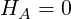 | (20.1) |
for unknown functions yα,1 ≤ α ≤ p of independent variables xi,1 ≤ i ≤ q must be forminvariant against infinitesimal transformations
|
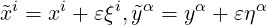 | (20.2) |
in first order of 𝜀. To transform the equations (20.1) by (20.2), derivatives of yα must be transformed, i.e. the part linear in 𝜀 must be determined. The corresponding formulas are (see e.g. [Olv86, Ste89])
| ỹj1…jkα | = y j1…jkα + 𝜀η j1…jkα + O(𝜀2) | ||
| ηj1…jk−1jkα | = 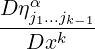 − yij1…jk−1α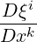 | (20.3) |
where D∕Dxk means total differentiation w.r.t. xk and from now on lower latin indices of functions yα, (and later uα) denote partial differentiation w.r.t. the independent variables xi, (and later vi). The complete symmetry condition then takes the form
| XHA | = 0 mod HA = 0 | (20.4) |
| X | = ξi 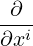 + ηα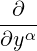 + ηmα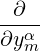 + ηmnα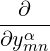 + … + ηmn…pα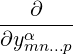 . | (20.5) |
where mod HA = 0 means that the original PDE-system is used to replace some partial derivatives of yα to reduce the number of independent variables, because the symmetry condition (20.4) must be fulfilled identically in xi,yα and all partial derivatives of yα.
For point symmetries, ξi,ηα are functions of xj,yβ and for contact symmetries they depend on xj,yβ and ykβ. We restrict ourself to point symmetries as those are the only ones that can be applied by the current version of the program APPLYSYM (see below). For literature about generalized symmetries see [Her95].
Though the formulation of the symmetry conditions (20.4), (20.5), (20.3) is straightforward and handled in principle by all related programs [Her95], the computational effort to formulate the conditions (20.4) may cause problems if the number of xi and yα is high. This can partially be avoided if at first only a few conditions are formulated and solved such that the remaining ones are much shorter and quicker to formulate.
A first step in this direction is to investigate one PDE HA = 0 after another, as done in [CHW91]. Two methods to partition the conditions for a single PDE are described by Bocharov/Bronstein [BB89] and Stephani [Ste89].
In the first method only those terms of the symmetry condition XHA = 0 are calculated which contain at least a derivative of yα of a minimal order m. Setting coefficients of these u-derivatives to zero provides symmetry conditions. Lowering the minimal order m successively then gradually provides all symmetry conditions.
The second method is even more selective. If HA is of order n then only terms of the symmetry condition XHA = 0 are generated which contain n′th order derivatives of yα. Furthermore these derivatives must not occur in HA itself. They can therefore occur in the symmetry condition (20.4) only in ηj1…jnα, i.e. in the terms
|
ηj1…jnα 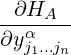 . |
If only coefficients of n′th order derivatives of yα need to be accurate to formulate preliminary conditions then from the total derivatives to be taken in (20.3) only that part is performed which differentiates w.r.t. the highest yα-derivatives. This means, for example, to form only ymnkα∂∕∂ymnα if the expression, which is to be differentiated totally w.r.t. xk, contains at most second order derivatives of yα.
The second method is applied in LIEPDE. Already the formulation of the remaining conditions is speeded up considerably through this iteration process. These methods can be applied if systems of DEs or single PDEs of at least second order are investigated concerning symmetries.
The second step in applying the whole method consists in solving the determining conditions (20.4), (20.5), (20.3) which are linear homogeneous PDEs for ξi,ηα. The complete solution of this system is not algorithmic any more because the solution of a general linear PDE-system is as difficult as the solution of its non-linear characteristic ODE-system which is not covered by algorithms so far.
Still algorithms are used successfully to simplify the PDE-system by calculating its standard normal form and by integrating exact PDEs if they turn up in this simplification process [Wol93]. One problem in this respect, for example, concerns the optimization of the symbiosis of both algorithms. By that we mean the ranking of priorities between integrating, adding integrability conditions and doing simplifications by substitutions - all depending on the length of expressions and the overall structure of the PDE-system. Also the extension of the class of PDEs which can be integrated exactly is a problem to be pursuit further.
The program LIEPDE which formulates the symmetry conditions calls the program CRACK to solve them. This is done in a number of successive calls in order to formulate and solve some first order PDEs of the overdetermined system first and use their solution to formulate and solve the next subset of conditions as described in the previous subsection. Also, LIEPDE can work on DEs that contain parametric constants and parametric functions. An ansatz for the symmetry generators can be formulated. For more details see [Wol93] or [BW92].
The procedure LIEPDE is called through
LIEPDE(problem,symtype,flist,inequ);
All parameters are lists.
The first parameter specifies the DEs to be investigated:
problem has the form {equations, ulist, xlist} where
Equations can be given as a list of single differential expressions and then the program
will try to bring them into the ‘solved form’ df(ui,..)=... automatically. If
equations are given in the solved form then the above conditions are checked and
execution is stopped it they are not satisfied. An easy way to get the equations in the
desired form is to use
FIRST SOLVE({eq1,eq2,...},{one highest derivative for each function u})
(see the example of the Karpman equations in LIEPDE.TST). The example of the
Burgers equation in LIEPDE.TST demonstrates that the number of symmetries for a
given maximal order of the infinitesimal generators depends on the derivative chosen for
the LHS.
The second parameter symtype of LIEPDE is a list {} that specifies the symmetry to be calculated. symtype can have the following values and meanings:
For an illustration of this effect see the two symmetry determinations of the Burgers equation in the file LIEPDE.TST.
For generalized symmetries one usually sets all ξi = 0. Then the ηα are equal to the characteristic functions.
The third parameter flist of LIEPDE is a list {} that includes
The fourth parameter inequ of LIEPDE is a list {} that includes all non-vanishing expressions which represent inequalities for the functions in flist.
The result of LIEPDE is a list with 3 elements, each of which is a list:
| {{con1, con2,…},{xi_… = …,…,eta_… = …,…},{flist}}. |
The first list contains remaining unsolved symmetry conditions coni. It is the empty list {} if all conditions have been solved. The second list gives the symmetry generators, i.e. expressions for ξi and ηj. The last list contains all free constants and functions occuring in the first and second list.
If infinitesimal symmetries have been found then the program APPLYSYM can use them for the following purposes:
Both methods are described in the following section.
In the following we assume that a symmetry generator X, given in (20.5), is known such that ODE(s)/PDE(s) HA = 0 satisfy the symmetry condition (20.4). The aim is to find new dependent functions uα = uα(xj,yβ) and new independent variables vi = vi(xj,yβ),1 ≤ α,β ≤ p,1 ≤ i,j ≤ q such that the symmetry generator X = ξi(xj,yβ)∂xi + ηα(xj,yβ)∂yα transforms to
|
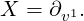 | (20.6) |
Inverting the above transformation to xi = xi(vj,uβ),yα = yα(vj,uβ) and setting
HA(xi(vj,uβ),yα(vj,uβ),…) = hA(vj,uβ,…) this means that
| 0 | = XHA(xi,yα,y jβ,…) mod H A = 0 | ||
| = XhA(vi,uα,u jβ,…) mod h A = 0 | |||
| = ∂v1hA(vi,uα,u jβ,…) mod h A = 0. |
Consequently, the variable v1 does not occur explicitly in hA. In the case of an ODE(-system) (v1 = v) the new equations 0 = hA(v,uα,duβ∕dv,…) are then of lower total order after the transformation z = z(u1) = du1∕dv with now z,u2,…up as unknown functions and u1 as independent variable.
The new form (20.6) of X leads directly to conditions for the symmetry variable v1 and the similarity variables vi|i≠1,uα (all functions of xk,yγ):
| Xv1 = 1 | = ξi(xk,yγ)∂ xiv1 + ηα(xk,yγ)∂ yαv1 | (20.7) |
| Xvj| j≠1 = Xuβ = 0 | = ξi(xk,yγ)∂ xiuβ + ηα(xk,yγ)∂ yαuβ | (20.8) |
The general solutions of (20.7), (20.8) involve free functions of p + q − 1 arguments. From the general solution of equation (20.8), p + q − 1 functionally independent special solutions have to be selected (v2,…,vp and u1,…,uq), whereas from (20.7) only one solution v1 is needed. Together, the expressions for the symmetry and similarity variables must define a non-singular transformation x,y → u,v.
Different special solutions selected at this stage will result in different resulting DEs which are equivalent under point transformations but may look quite differently. A transformation that is more difficult than another one will in general only complicate the new DE(s) compared with the simpler transformation. We therefore seek the simplest possible special solutions of (20.7), (20.8). They also have to be simple because the transformation has to be inverted to solve for the old variables in order to do the transformations.
The following steps are performed in the corresponding mode of the program APPLYSYM:
A second application of infinitesimal symmetries is the generalization of a known special solution given in implicit form through 0 = F(xi,yα). If one knows a symmetry variable v1 and similarity variables vr,uα,2 ≤ r ≤ p then v1 can be shifted by a constant c because of ∂v1HA = 0 and therefore the DEs 0 = HA(vr,uα,ujβ,…) are unaffected by the shift. Hence from
| 0 = F(xi,yα) = F(xi(vj,uβ),yα(vj,uβ)) = (vj,uβ) |
follows that
| 0 = (v1 + c,vr,uβ) = (v1(xi,yα) + c,vr(xi,yα),uβ(xi,yα)) |
defines implicitly a generalized solution yα = yα(xi,c).
This generalization works only if ∂v1≠0 and if does not already have a constant additive to v1.
The method above needs to know xi = xi(uβ,vj),yα = yα(uβ,vj) and uα = uα(xj,yβ),vα = vα(xj,yβ) which may be practically impossible. Better is, to integrate xi,yα along X:
|
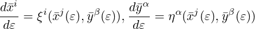 | (20.9) |
with initial values i = xi,ȳα = yα for 𝜀 = 0. (This ODE-system is the characteristic system of (20.8).)
Knowing only the finite transformations
|
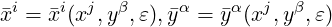 | (20.10) |
gives immediately the inverse transformation i = i(xj,yβ,𝜀),ȳα = ȳα(xj,yβ,𝜀) just by 𝜀 →−𝜀 and renaming xi,yα ↔i,ȳα.
The special solution 0 = F(xi,yα) is generalized by the new constant 𝜀 through
| 0 = F(xi,yα) = F(xi(j,ȳβ,𝜀),yα(j,ȳβ,𝜀)) |
after dropping the .
The steps performed in the corresponding mode of the program APPLYSYM show features of both techniques:
|
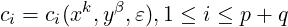 | (20.11) |
which are solved for xj = xj(ci,𝜀),yα = yα(ci,𝜀) to obtain the generalized solution through
| 0 = F(xj,yα) = F(xj(c i(xk,yβ,0),𝜀),yα(c i(xk,yβ,0),𝜀)). |
If one would like to generalize a given special solution with m new constants because m symmetries are known, then one could run the whole program m times, each time with a different symmetry or one could run the program once with a linear combination of m symmetry generators which again is a symmetry generator. Running the program once adds one constant but we have in addition m − 1 arbitrary constants in the linear combination of the symmetries, so m new constants are added. Usually one will generalize the solution gradually to make solving (20.9) gradually more difficult.
The call of APPLYSYM is APPLYSYM({de, fun, var}, {sym, cons});
The list that is the first argument of APPLYSYM is the same as the first argument of LIEPDE and the second argument is the list that LIEPDE returns without its first element (the unsolved conditions). An example is given below.
What APPLYSYM returns depends on the last performed modus. After modus 1 the
return is
{{newde, newfun, newvar}, trafo}
where
After modus 2, APPLYSYM returns the generalized special solution.
Weyl’s class of solutions of Einsteins field equations consists of axialsymmetric time independent metrics of the form
|
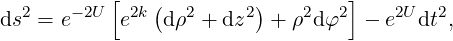 | (20.12) |
where U and k are functions of ρ and z. If one is interested in generalizing these solutions to have a time dependence then the resulting DEs can be transformed such that one longer third order ODE for U results which contains only ρ derivatives [Kub]. Because U appears not alone but only as derivative, a substitution
|
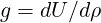 | (20.13) |
lowers the order and the introduction of a function
|
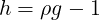 | (20.14) |
simplifies the ODE to
|
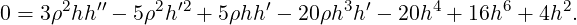 | (20.15) |
where ′ = d∕dρ. Calling LIEPDE through
gives
All conditions have been solved because the first element of sym is {}. The two existing symmetries are therefore
|
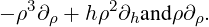 | (20.16) |
Corresponding finite transformations can be calculated with APPLYSYM through
The interactive session is given below with the user input following the prompt ‘:’ or following ‘?’. (Empty lines have been deleted.)
We enter ‘1’ because we want to reduce dependencies by finding similarity variables and one symmetry variable and then doing the transformation such that the symmetry variable does not explicitly occur in the DE.
We could have entered ‘sy_(2);’ or a combination of both as well with the calculation running then differently.
This was the input part, now the real calculation starts.
The PDE is equation (20.8).
For the following calculation only a single special solution of the PDE is necessary and this has to be specified from the general solution by choosing a special function ff. (This function is called ff to prevent a clash with names of user variables/functions.) In principle any choice of ff would work, if it defines a non-singular coordinate transformation, i.e. here r must be a function of u_. If we have q independent variables and p functions of them then ff has p + q arguments. Because of the condition 0 =ff one has essentially the freedom of choosing a function of p + q − 1 arguments freely. This freedom is also necessary to select p + q − 1 different functions ff and to find as many functionally independent solutions u_ which all become the new similarity variables. q of them become the new functions uα and p − 1 of them the new variables v2,…,vp. Here we have p = q = 1 (one single ODE).
Though the program could have done that alone, once the general solution ff(..) is known, the user can interfere here to enter a simpler solution, if possible.
Similar to above.
We so far assumed that the symmetry variable is one of the new variables, but, of course we also could choose it to be one of the new functions. If it is one of the functions then only derivatives of this function occur in the new DE, not the function itself. If it is one of the variables then this variable will not occur explicitly.
In our case we prefer (without strong reason) to have the function as symmetry variable. We therefore answered with ‘no’. As a consequence, u and v will exchange names such that still all new functions have the name u and the new variables have name v:
We stop here. The following is returned from our APPLYSYM call:
The use of APPLYSYM effectively provided us the finite transformation
|
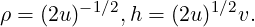 | (20.17) |
and the new ODE
|
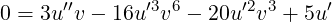 | (20.18) |
where u = u(v) and ′ = d∕dv. Using one symmetry we reduced the 2. order ODE (20.15) to a first order ODE (20.18) for u′ plus one integration. The second symmetry can be used to reduce the remaining ODE to an integration too by introducing a variable w through v3d∕dv = d∕dw, i.e. w = −1∕(2v2). With
|
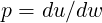 | (20.19) |
the remaining ODE is
|
0 = 3w 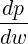 + 2p(p + 1)(4p + 1) |
with solution
|
cw−2∕4 = cv4 = 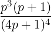 ,c = const. |
Writing (20.19) as p = v3(du∕dp)∕(dv∕dp) we get u by integration and with (20.17) further a parametric solution for ρ,h:
| ρ | = 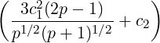 −1∕2 | (20.20) |
| h | = 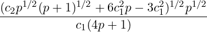 | (20.21) |
where c1,c2 = const. and c1 = c1∕4. Finally, the metric function U(p) is obtained as an integral from (20.13),(20.14).
Restrictions of the applicability of the program APPLYSYM result from limitations of the program QUASILINPDE described in a section below. Essentially this means that symmetry generators may only be polynomially non-linear in xi,yα. Though even then the solvability can not be guaranteed, the generators of Lie-symmetries are mostly very simple such that the resulting PDE (20.22) and the corresponding characteristic ODE-system have good chances to be solvable.
Apart from these limitations implied through the solution of differential equations with CRACK and algebraic equations with SOLVE the program APPLYSYM itself is free of restrictions, i.e. if once new versions of CRACK, SOLVE would be available then APPLYSYM would not have to be changed.
Currently, whenever a computational step could not be performed the user is informed and has the possibility of entering interactively the solution of the unsolved algebraic system or the unsolved linear PDE.
The generalization of special solutions of DEs as well as the computation of similarity and symmetry variables involve the general solution of single first order linear PDEs. The procedure QUASILINPDE is a general procedure aiming at the general solution of PDEs
|
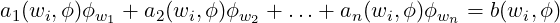 | (20.22) |
in n independent variables wi,i = 1…n for one unknown function ϕ = ϕ(wi).
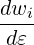 | = ai(wj,ϕ) | (20.23) |
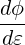 | = b(wj,ϕ) | (20.24) |
for ϕ,wi regarded now as functions of one variable 𝜀.
Because the ai and b do not depend explicitly on 𝜀, one of the equations (20.23),(20.24) with non-vanishing right hand side can be used to divide all others through it and by that having a system with one less ODE to solve. If the equation to divide through is one of (20.23) then the remaining system would be
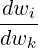 | = 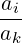 ,i = 1,2,…k − 1,k + 1,…n | (20.25) |
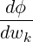 | = 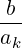 | (20.26) |
with the independent variable wk instead of 𝜀. If instead we divide through equation (20.24) then the remaining system would be
|
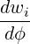 =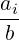 ,i = 1,2,…n |
with the independent variable ϕ instead of 𝜀.
The equation to divide through is chosen by a subroutine with a heuristic to find the “simplest” non-zero right hand side (ak or b), i.e. one which
One purpose of this division is to reduce the number of ODEs by one. Secondly, the general solution of (20.23), (20.24) involves an additive constant to 𝜀 which is not relevant and would have to be set to zero. By dividing through one ODE we eliminate 𝜀 and lose the problem of identifying this constant in the general solution before we would have to set it to zero.
If the characteristic ODE-system can not be solved in the form (20.25), (20.26) or (1) then successively all other ODEs of (20.23), (20.24) with non-vanishing right hand side are used for division until one is found such that the resulting ODE-system can be solved completely. Otherwise the PDE can not be solved by QUASILINPDE.
|
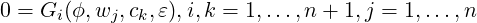 | (20.27) |
then according to the general theory for solving first order PDEs, 𝜀 has to be eliminated from one of the equations and to be substituted in the others to have left n equations. Also the constant that turns up additively to 𝜀 is to be set to zero. Both tasks are automatically fulfilled, if, as described above, 𝜀 is already eliminated from the beginning by dividing all equations of (20.23), (20.24) through one of them.
On either way one ends up with n equations
|
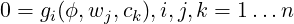 | (20.28) |
involving n constants ck.
The final step is to solve (20.28) for the ci to obtain
|
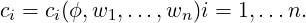 | (20.29) |
The final solution ϕ = ϕ(wi) of the PDE (20.22) is then given implicitly through
| 0 = F(c1(ϕ,wi),c2(ϕ,wi),…,cn(ϕ,wi)) |
where F is an arbitrary function with n arguments.
The call of QUASILINPDE is
QUASILINPDE(de, fun, varlist);
The result of QUASILINPDE is a list of general solutions
| {sol1, sol2,…}. |
If QUASILINPDE can not solve the PDE then it returns {}. Each solution soli is a list of expressions
| {ex1, ex2,…} |
such that the dependent function (ϕ in (20.22)) is determined implicitly through an arbitrary function F and the algebraic equation
| 0 = F(ex1, ex2,…). |
Example 1:
To solve the quasilinear first order PDE
| 1 = xu,x + uu,y − zu,z |
for the function u = u(x,y,z), the input would be
In this example the procedure returns
| {{x∕eu,zeu,u2 − 2y}}, |
i.e. there is one general solution (because the outer list has only one element which itself is a list) and u is given implicitly through the algebraic equation
| 0 = F(x∕eu,zeu,u2 − 2y) |
with arbitrary function F.
Example 2:
For the linear inhomogeneous PDE
| 0 = yz,x + xz,y − 1, forz = z(x,y) |
QUASILINPDE returns the result that for an arbitrary function F, the equation
|
0 = F 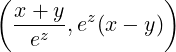 |
defines the general solution for z.
Example 3:
For the linear inhomogeneous PDE (3.8) from [Kam59]
| 0 = xw,x + (y + z)(w,y − w,z), forw = w(x,y,z) |
QUASILINPDE returns the result that for an arbitrary function F, the equation
|
0 = F 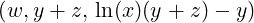 |
defines the general solution for w, i.e. for any function f
|
w = f 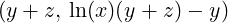 |
solves the PDE.
One restriction on the applicability of QUASILINPDE results from the program CRACK which tries to solve the characteristic ODE-system of the PDE. So far CRACK can be applied only to polynomially non-linear DE’s, i.e. the characteristic ODE-system (20.25),(20.26) or (1) may only be polynomially non-linear, i.e. in the PDE (20.22) the expressions ai and b may only be rational in wj,ϕ.
The task of CRACK is simplified as (20.27) does not have to be solved for wj,ϕ. On the other hand (20.27) has to be solved for the ci. This gives a second restriction coming from the REDUCE function SOLVE. Though SOLVE can be applied to polynomial and transzendential equations, again no guarantee for solvability can be given.
Finally, after having found the finite transformations, the program APPLYSYM calls the procedure DETRAFO to perform the transformations. DETRAFO can also be used alone to do point- or higher order transformations which involve a considerable computational effort if the differential order of the expression to be transformed is high and if many dependent and independent variables are involved. This might be especially useful if one wants to experiment and try out different coordinate transformations interactively, using DETRAFO as standalone procedure.
To run DETRAFO, the old functions yα and old variables xi must be known explicitly in terms of algebraic or differential expressions of the new functions uβ and new variables vj. Then for point transformations the identity
| dyα | = 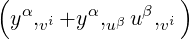 dvi | (20.30) |
| = yα, xjdxj | (20.31) | |
| = yα,
xj 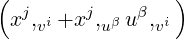 dvi | (20.32) |
provides the transformation
|
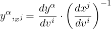 | (20.33) |
with det
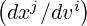
≠0 because of the regularity of the transformation which is checked by DETRAFO. Non-regular transformations are not performed.DETRAFO is not restricted to point transformations. In the case of contact- or higher order transformations, the total derivatives dyα∕dvi and dxj∕dvi then only include all vi− derivatives of uβ which occur in
| yα | = yα(vi,uβ,uβ, vj,…) | ||
| xk | = xk(vi,uβ,uβ, vj,…). |
The call of DETRAFO is
DETRAFO({ex1, ex2, …, exm},
{ofun1 =fex1, ofun2 =fex2, …,ofunp =fexp},
{ovar1 =vex1, ovar2 =vex2, …, ovarq =vexq},
{nfun1, nfun2, …, nfunp},
{nvar1, nvar2, …, nvarq});
where m,p,q are arbitrary.
Names for ofun, ovar, nfun and nvar can be arbitrarily chosen.
As the result DETRAFO returns the first argument of its input, i.e. the list
| {ex1, ex2,…, exm} |
where all exi are transformed.
The only requirement is that the old independent variables xi and old functions yα must be given explicitly in terms of new variables vj and new functions uβ as indicated in the syntax. Then all calculations involve only differentiations and basic algebra.
| Up | Next | Front |